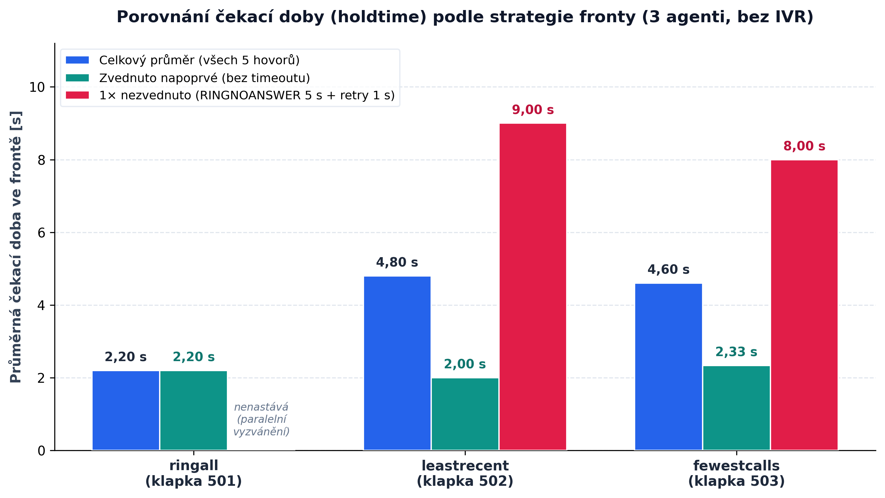
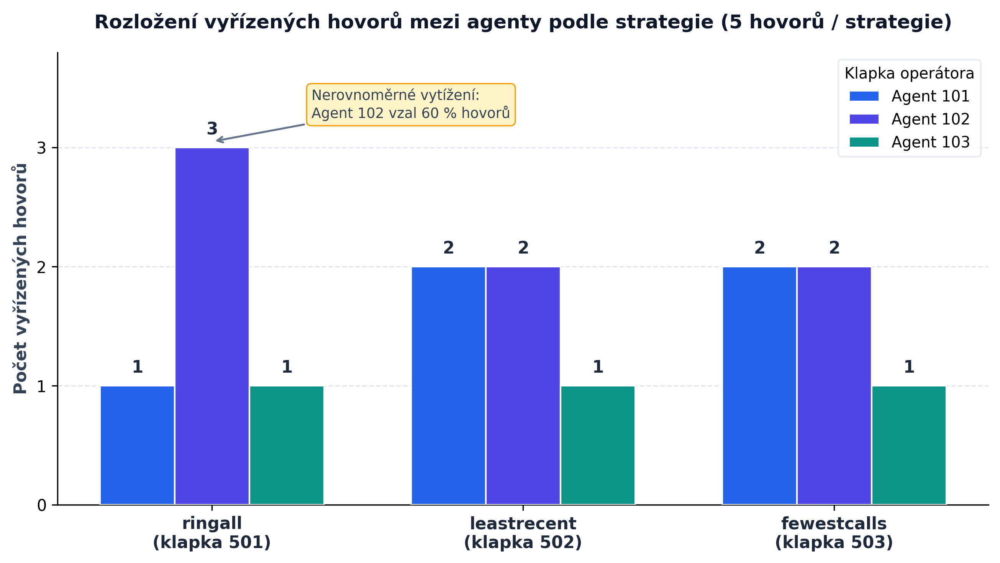
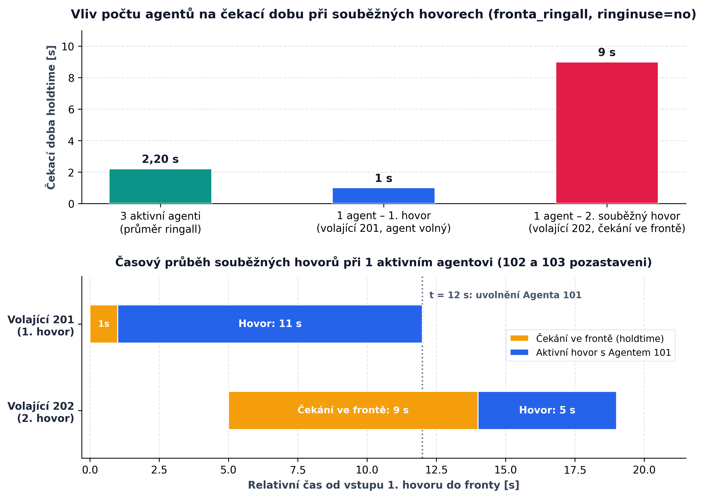
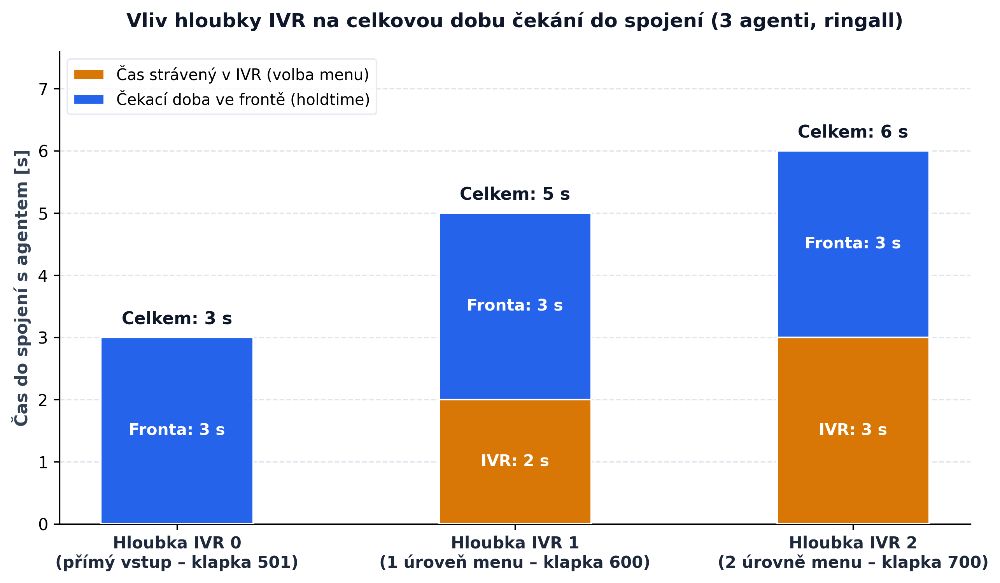

Popis tématu a cíl přidělené varianty
Zákaznická call centra tvoří jeden z nejnáročnějších scénářů nasazení IP telefonie (VoIP). Na rozdíl od běžného kancelářského volání zde přicházejí hovory v nárazových špičkách a pobočková ústředna musí v reálném čase rozhodovat o zařazení volajícího do čekací fronty, přehrání interaktivního hlasového menu (IVR) a přidělení hovoru nejvhodnějšímu dostupnému operátorovi (agentovi).
Cílem tohoto projektu je vybudovat funkční prototyp call centra na open-source pobočkové ústředně
Asterisk s využitím moderního SIP zásobníku PJSIP (res_pjsip)
a modulu front (app_queue), a následně exaktně změřit a porovnat chování čekací doby pro
přidělenou technickou variantu:
- Strategie směrování fronty:
ringall,leastrecentafewestcallspři běžném odbavení i při simulovaném nezvednutí hovoru prvním osloveným agentem (RINGNOANSWER). - Počet aktivních agentů: porovnání dostupnosti 3 agentů (
101–103) oproti omezení kapacity na 1 aktivního agenta při souběžných hovorech. - Hloubka stromu IVR: vliv přímého vstupu do fronty (hloubka 0), jednoúrovňového menu (hloubka 1) a dvouúrovňového menu (hloubka 2) na celkovou dobu od vytočení po spojení s operátorem.
Moderní call centra, ACD a řízení kvality obsluhy
Architektura ACD a role protokolu SIP
Jádrem každého moderního kontaktního centra je systém ACD (Automatic Call Distribution), který nahrazuje ruční přepojování operátorkou. Příchozí hovor je nejprve odbaven hlasovým automatem IVR (Interactive Voice Response) na základě tónové volby DTMF (RFC 4733) nebo hlasového rozpoznávání, poté je zařazen do příslušné dovednostní či oddělené fronty a směrován agentům dle zvoleného algoritmu.
Na síťové vrstvě dnes jednoznačně dominuje protokol SIP (RFC 3261) pro signalizaci a
RTP pro přenos hlasu. V prostředí Asterisku byl dřívější kanálový ovladač chan_sip
od verze Asterisk 21 zcela odstraněn a standardem je modulární architektura PJSIP.
Klíčové metriky a open-source vs. cloud
Kvalita provozu call centra se hodnotí především metrikami ASA (Average Speed of Answer) –
průměrnou dobou čekání ve frontě (holdtime), SLA (Service Level Agreement)
(např. 80 % hovorů zvednuto do 20 s) a mírou předčasného zavěšení volajících (Abandonment Rate).
Vedle komerčních cloudových platforem CCaaS (Genesys Cloud, Amazon Connect, Twilio Flex) zůstává
Asterisk (případně nadstavby FreePBX, Issabel či VICIdial) nejrozšířenějším open-source
řešením pro on-premise firemní ústředny díky plné kontrole nad dialplanem, detailnímu logování
(queue_log, CDR) a nulovým licenčním poplatkům za agenta.
Implementace call centra pro přidělenou variantu
Topologie testovacího prostředí
Ústředna Asterisk 22.5.2 běží v prostředí Ubuntu (WSL2) na adrese 192.168.29.69:5060/UDP.
Klientskou část simuluje 5 nezávislých přenosných instancí softphonu MicroSIP 3.23.6 na Windows
(3 agenti + 2 volající), přičemž veškerý SIP provoz je zachytáván nástrojem tcpdump
a vyhodnocován společně s interními logy Asterisku.
Volající (Zákazníci)
MicroSIP klapky 201 a 202
Vytáčí 501–503, 600, 700
Asterisk 22.5.2 (PBX)
pjsip.conf · queues.conf · extensions.conf
IVR (0 / 1 / 2 úrovně) + 3 fronty ACD
Logování: queue_log, CDR, tcpdump
Operátoři (Agenti)
MicroSIP klapky 101, 102, 103
Dynamické pozastavení přes queue pause
Strategie ringall
Asterisk odešle požadavek SIP INVITE všem dostupným agentům současně.
Jakmile hovor zvedne nejrychlejší z nich (200 OK), ústředna okamžitě rozešle
ostatním CANCEL s hlavičkou Call completed elsewhere.
Minimalizuje čekací dobu, ale nezaručuje rovnoměrné vytížení agentů.
Strategie leastrecent
Hovor je směrován výhradně jednomu agentovi, který byl osloven (přijal hovor)
nejdávněji. Zajišťuje férový odpočinek mezi hovory. Pokud však vybraný agent hovor
v limitu timeout = 5 s nezvedne, volající zbytečně čeká po celou dobu
timeout + retry.
Strategie fewestcalls
Hovor dostane jeden agent s nejnižším počtem vyřízených hovorů v dané frontě.
Vyrovnává celkovou pracovní zátěž týmu (bez ohledu na délku jednotlivých hovorů). Stejně jako u
leastrecent je citlivá na neodpovídajícího operátora.
Navržená testovací matice a parametry fronty
Pro porovnatelnost výsledků byly všechny tři fronty v queues.conf odvozeny ze společné
šablony s parametry timeout = 5 (maximální doba vyzvánění u agenta),
retry = 1 (pauza před dalším pokusem) a ringinuse = no
(obsazenému agentovi není doručován druhý hovor).
| Testovací blok | Volaná klapka | Strategie fronty | Aktivní agenti | Hloubka IVR | Popis experimentu |
|---|---|---|---|---|---|
| Blok 1A – Paralelní směrování | 501 |
ringall |
3 (101–103) | 0 | 5 hovorů z klapky 201; měření rychlosti spojení a rozdělení hovorů mezi operátory. |
| Blok 1B – Nejdéle čekající agent | 502 |
leastrecent |
3 (101–103) | 0 | 3 hovory zvednuty napoprvé + 2 hovory se simulací nezvednutí (vypršení 5s timeoutu). |
| Blok 1C – Nejméně hovorů | 503 |
fewestcalls |
3 (101–103) | 0 | 3 hovory zvednuty napoprvé + 2 hovory se simulací nezvednutí (vypršení 5s timeoutu). |
| Blok 2 – Přetížení kapacity | 501 |
ringall |
1 (jen 101) | 0 | Agenti 102 a 103 pozastaveni (queue pause); 2 souběžné hovory z 201 a 202. |
| Blok 3 – Hloubka stromu IVR | 501 / 600 / 700 |
ringall |
3 (101–103) | 0 / 1 / 2 | Porovnání přímého vstupu, 1úrovňového menu (600→1) a 2úrovňového menu (700→1→1). |
Konfigurační soubory Asterisku
[general] persistentmembers = yes autofill = yes ; --- Společná šablona fronty --- [fronta-zaklad](!) musicclass = default timeout = 5 retry = 1 maxlen = 0 ringinuse = no joinempty = yes leavewhenempty = no member => PJSIP/101 member => PJSIP/102 member => PJSIP/103 ; --- Tři testované strategie podle zadání --- [fronta_ringall](fronta-zaklad) strategy = ringall [fronta_leastrecent](fronta-zaklad) strategy = leastrecent [fronta_fewestcalls](fronta-zaklad) strategy = fewestcalls
[callcentrum]
; --- Interní testovací volání ---
exten => _10X,1,Dial(PJSIP/${EXTEN},20)
same => n,Hangup()
exten => _20X,1,Dial(PJSIP/${EXTEN},20)
same => n,Hangup()
; --- Hloubka IVR 0: Přímý vstup do fronty ---
exten => 501,1,Answer()
same => n,Queue(fronta_ringall)
same => n,Hangup()
exten => 502,1,Answer()
same => n,Queue(fronta_leastrecent)
same => n,Hangup()
exten => 503,1,Answer()
same => n,Queue(fronta_fewestcalls)
same => n,Hangup()
; --- Hloubka IVR 1 (klapka 600) a IVR 2 (klapka 700) ---
exten => 600,1,Answer()
same => n,Goto(ivr-uroven1,s,1)
exten => 700,1,Answer()
same => n,Goto(ivr-hlavni,s,1)
[ivr-hlavni]
exten => s,1,Background(beep)
same => n,WaitExten(5)
exten => 1,1,Goto(ivr-uroven1,s,1)
exten => t,1,Goto(s,1)
exten => i,1,Goto(s,1)
[ivr-uroven1]
exten => s,1,Background(beep)
same => n,WaitExten(5)
exten => 1,1,Queue(fronta_ringall)
same => n,Hangup()
exten => 2,1,Queue(fronta_leastrecent)
same => n,Hangup()
exten => 3,1,Queue(fronta_fewestcalls)
same => n,Hangup()
exten => t,1,Goto(s,1)
exten => i,1,Goto(s,1)
[transport-udp] type=transport protocol=udp bind=0.0.0.0:5060 ; --- Šablony pro účty --- [endpoint-basic](!) type=endpoint context=callcentrum disallow=all allow=alaw,ulaw direct_media=no [auth-basic](!) type=auth auth_type=userpass password=heslo123 [aor-basic](!) type=aor max_contacts=1 ; --- Agenti (101, 102, 103) a Volající (201, 202) --- [101](endpoint-basic) auth=101 aors=101 [101](auth-basic) username=101 [101](aor-basic) [102](endpoint-basic) auth=102 aors=102 [102](auth-basic) username=102 [102](aor-basic) [103](endpoint-basic) auth=103 aors=103 [103](auth-basic) username=103 [103](aor-basic) [201](endpoint-basic) auth=201 aors=201 [201](auth-basic) username=201 [201](aor-basic) [202](endpoint-basic) auth=202 aors=202 [202](auth-basic) username=202 [202](aor-basic)
Analýza čekacích dob, grafy a zachycená SIP signalizace
Souhrnná tabulka čekacích dob podle scénářů
| Scénář / testovaný parametr | Počet hovorů | Čas v IVR (s) | Průměr holdtime (s) | Medián (s) | Min–Max (s) | Celkem do spojení (s) |
|---|---|---|---|---|---|---|
| ringall (3 agenti, bez IVR – klapka 501) | 5 | 0 | 2,20 | 2,0 | 1–4 | 2,20 |
| leastrecent – celkem (3 agenti, bez IVR – klapka 502) | 5 | 0 | 4,80 | 2,0 | 2–10 | 4,80 |
| ↳ z toho zvednuto napoprvé (bez timeoutu) | 3 | 0 | 2,00 | 2,0 | 2–2 | 2,00 |
| ↳ z toho 1× nezvednuto (RINGNOANSWER 5 s + retry 1 s) | 2 | 0 | 9,00 | 9,0 | 8–10 | 9,00 |
| fewestcalls – celkem (3 agenti, bez IVR – klapka 503) | 5 | 0 | 4,60 | 3,0 | 2–8 | 4,60 |
| ↳ z toho zvednuto napoprvé (bez timeoutu) | 3 | 0 | 2,33 | 2,0 | 2–3 | 2,33 |
| ↳ z toho 1× nezvednuto (RINGNOANSWER 5 s + retry 1 s) | 2 | 0 | 8,00 | 8,0 | 8–8 | 8,00 |
| 1 aktivní agent – 1. hovor (volající 201, agent volný) | 1 | 0 | 1,00 | 1,0 | 1 | 1,00 |
| 1 aktivní agent – 2. souběžný hovor (volající 202, fronta) | 1 | 0 | 9,00 | 9,0 | 9 | 9,00 |
| Hloubka IVR 0 (přímý vstup – klapka 501, ringall) | 1 | 0 | 3,00 | 3,0 | 3 | 3,00 |
| Hloubka IVR 1 (1 úroveň menu – klapka 600, ringall) | 1 | 2 | 3,00 | 3,0 | 3 | 5,00 |
| Hloubka IVR 2 (2 úrovně menu – klapka 700, ringall) | 1 | 3 | 3,00 | 3,0 | 3 | 6,00 |
Vizualizace naměřených dat (kliknutím zobrazíte v plném rozlišení)

leastrecent, fewestcalls) však čekací doba skokově roste na 8,00–9,00 s.

ringall vedla k nerovnoměrnému zatížení (agent 102 přijal 3 z 5 hovorů, tj. 60 %), zatímco leastrecent a fewestcalls rozdělily hovory rovnoměrně v poměru 2 : 2 : 1.


holdtime ve frontě zůstal konstantní (3 s), avšak průchod hlasovým menu lineárně zvýšil celkovou dobu čekání volajícího na 5 s (IVR 1) a 6 s (IVR 2).
Detailní log všech 20 testovacích hovorů
| # | Testovací blok | Klapka | Volající | Fronta | Agent | RINGNOANSWER | IVR (s) | holdtime (s) | Celkem (s) | Hovor (s) |
|---|---|---|---|---|---|---|---|---|---|---|
| 1 | Strategie (3 agenti) | 501 | 201 | fronta_ringall | 103 | 0 | 0 | 4 | 4 | 4 |
| 2 | Strategie (3 agenti) | 501 | 201 | fronta_ringall | 102 | 0 | 0 | 1 | 1 | 3 |
| 3 | Strategie (3 agenti) | 501 | 201 | fronta_ringall | 101 | 0 | 0 | 2 | 2 | 2 |
| 4 | Strategie (3 agenti) | 501 | 201 | fronta_ringall | 102 | 0 | 0 | 2 | 2 | 1 |
| 5 | Strategie (3 agenti) | 501 | 201 | fronta_ringall | 102 | 0 | 0 | 2 | 2 | 1 |
| 6 | Strategie (3 agenti) | 502 | 201 | fronta_leastrecent | 101 | 0 | 0 | 2 | 2 | 2 |
| 7 | Strategie (3 agenti) | 502 | 201 | fronta_leastrecent | 102 | 0 | 0 | 2 | 2 | 2 |
| 8 | Strategie (3 agenti) | 502 | 201 | fronta_leastrecent | 103 | 0 | 0 | 2 | 2 | 1 |
| 9 | Strategie (3 agenti) | 502 | 201 | fronta_leastrecent | 101 | 1 (5 s) | 0 | 8 | 8 | 3 |
| 10 | Strategie (3 agenti) | 502 | 201 | fronta_leastrecent | 102 | 1 (5 s) | 0 | 10 | 10 | 2 |
| 11 | Strategie (3 agenti) | 503 | 201 | fronta_fewestcalls | 101 | 0 | 0 | 3 | 3 | 1 |
| 12 | Strategie (3 agenti) | 503 | 201 | fronta_fewestcalls | 102 | 0 | 0 | 2 | 2 | 1 |
| 13 | Strategie (3 agenti) | 503 | 201 | fronta_fewestcalls | 103 | 0 | 0 | 2 | 2 | 1 |
| 14 | Strategie (3 agenti) | 503 | 201 | fronta_fewestcalls | 101 | 1 (5 s) | 0 | 8 | 8 | 2 |
| 15 | Strategie (3 agenti) | 503 | 201 | fronta_fewestcalls | 102 | 1 (5 s) | 0 | 8 | 8 | 1 |
| 16 | Přetížení (1 agent) | 501 | 201 | fronta_ringall | 101 | 0 | 0 | 1 | 1 | 11 |
| 17 | Přetížení (1 agent) | 501 | 202 | fronta_ringall | 101 | 0 | 0 | 9 | 9 | 5 |
| 18 | Hloubka IVR 0 | 501 | 201 | fronta_ringall | 101 | 0 | 0 | 3 | 3 | 3 |
| 19 | Hloubka IVR 1 | 600 | 201 | fronta_ringall | 101 | 0 | 2 | 3 | 5 | 3 |
| 20 | Hloubka IVR 2 | 700 | 201 | fronta_ringall | 101 | 0 | 3 | 3 | 6 | 2 |
Ověření na síťové a aplikační vrstvě (výřezy ze zachycených dat)
Níže jsou přímé výřezy ze zachyceného souboru mereni_sip.pcap a logu
queue_log.txt, které prokazují chování jednotlivých strategií s milisekundovou přesností.
Pkt | Rel. čas | Směr | SIP zpráva / Hlavička Reason -----+----------+------------+-------------------------------------------------------------------- # 65 | + 0.003s | 201 -> 501 | INVITE sip:501@192.168.29.69 SIP/2.0 (autorizováno Digest MD5) # 67 | + 0.006s | 501 -> 201 | SIP/2.0 200 OK (Asterisk přijímá hovor do Queue) # 70 | + 0.011s | PBX -> 101 | INVITE sip:101@158.196.56.160:55980;ob SIP/2.0 <-- Paralelní # 72 | + 0.014s | PBX -> 102 | INVITE sip:102@158.196.56.160:65433;ob SIP/2.0 <-- oslovení všech # 73 | + 0.020s | PBX -> 103 | INVITE sip:103@158.196.56.160:60942;ob SIP/2.0 <-- 3 agentů (9 ms) # 75 | + 0.029s | 101 -> PBX | SIP/2.0 180 Ringing # 77 | + 0.043s | 102 -> PBX | SIP/2.0 180 Ringing # 79 | + 0.043s | 103 -> PBX | SIP/2.0 180 Ringing # 81 | + 1.495s | 102 -> PBX | SIP/2.0 200 OK <-- Agent 102 zvedá # 83 | + 1.500s | PBX -> 101 | CANCEL sip:101... | Reason: SIP;cause=200;text="Call completed elsewhere" # 84 | + 1.500s | PBX -> 103 | CANCEL sip:103... | Reason: SIP;cause=200;text="Call completed elsewhere" # 87 | + 1.501s | 101 -> PBX | SIP/2.0 487 Request Terminated # 88 | + 1.508s | 103 -> PBX | SIP/2.0 487 Request Terminated
Pkt | Rel. čas | Směr | SIP zpráva / Poznámka
-----+----------+------------+--------------------------------------------------------------------
#287 | + 0.002s | 201 -> 502 | INVITE sip:502@192.168.29.69 SIP/2.0
#289 | + 0.005s | 502 -> 201 | SIP/2.0 200 OK (vstup do fronta_leastrecent)
#293 | + 0.013s | PBX -> 101 | INVITE sip:101@158.196.56.160:55980;ob SIP/2.0 <-- Osloven JEN agent 101
#295 | + 0.027s | 101 -> PBX | SIP/2.0 180 Ringing
| ... | | [5,002 s vyzvánění bez odpovědi -> vyprší timeout = 5 s]
#297 | + 5.015s | PBX -> 101 | CANCEL sip:101... | Reason: Q.850;cause=0
#299 | + 5.016s | 101 -> PBX | SIP/2.0 487 Request Terminated
| ... | | [1,002 s pauza -> parametr retry = 1 s]
#302 | + 6.017s | PBX -> 101 | INVITE sip:101@158.196.56.160:55980;ob SIP/2.0 <-- Nový pokus (bez autopause)
#304 | + 6.046s | 101 -> PBX | SIP/2.0 180 Ringing
#306 | + 7.966s | 101 -> PBX | SIP/2.0 200 OK (spojeno po celkovém holdtime = 8 s)
# Hovor #9 (leastrecent s RINGNOANSWER 5000 ms -> holdtime = 8 s) 1795461327|1795461327.75|fronta_leastrecent|NONE|ENTERQUEUE||201|1 1795461332|1795461327.75|fronta_leastrecent|PJSIP/101|RINGNOANSWER|5000 1795461335|1795461327.75|fronta_leastrecent|PJSIP/101|CONNECT|8|1795461333.77|1 1795461338|1795461327.75|fronta_leastrecent|PJSIP/101|COMPLETEAGENT|8|3|1 # Přetížení při 1 agentovi (201 mluví 11 s, souběžný 202 čeká 9 s ve frontě) 1795461881|1795461881.104|fronta_ringall|NONE|ENTERQUEUE||201|1 1795461882|1795461881.104|fronta_ringall|PJSIP/101|CONNECT|1|1795461881.105|1 1795461886|1795461886.106|fronta_ringall|NONE|ENTERQUEUE||202|1 1795461893|1795461881.104|fronta_ringall|PJSIP/101|COMPLETEAGENT|1|11|1 1795461895|1795461886.106|fronta_ringall|PJSIP/101|CONNECT|9|1795461893.108|2 1795461900|1795461886.106|fronta_ringall|PJSIP/101|COMPLETEAGENT|9|5|1 # Hloubka IVR 2 (hovor začal v 1795462006, vstup do fronty až v 1795462009 -> +3 s v IVR) 1795462009|1795462006.124|fronta_ringall|NONE|ENTERQUEUE||201|1 1795462012|1795462006.124|fronta_ringall|PJSIP/101|CONNECT|3|1795462009.125|2
"","201","501","callcentrum",""""" <201>","PJSIP/201-0000003c","PJSIP/101-0000003d","Queue","fronta_ringall","2026-11-23 19:24:41","2026-11-23 19:24:41","2026-11-23 19:24:53",12,12,"ANSWERED","DOCUMENTATION","1795461881.104","" "","202","501","callcentrum",""""" <202>","PJSIP/202-0000003e","PJSIP/101-0000003f","Queue","fronta_ringall","2026-11-23 19:24:46","2026-11-23 19:24:46","2026-11-23 19:25:00",13,13,"ANSWERED","DOCUMENTATION","1795461886.106","" "","201","1","ivr-uroven1",""""" <201>","PJSIP/201-00000044","PJSIP/101-00000045","Queue","fronta_ringall","2026-11-23 19:26:29","2026-11-23 19:26:29","2026-11-23 19:26:37",8,8,"ANSWERED","DOCUMENTATION","1795461989.117","" "","201","1","ivr-uroven1",""""" <201>","PJSIP/201-00000048","PJSIP/101-00000049","Queue","fronta_ringall","2026-11-23 19:26:46","2026-11-23 19:26:46","2026-11-23 19:26:54",8,8,"ANSWERED","DOCUMENTATION","1795462006.124",""
Vlastní názor na problematiku a praktický přínos
Praktická měření potvrdila, že neexistuje jedna univerzálně nejlepší strategie fronty — volba je vždy kompromisem mezi rychlostí odbavení zákazníka (SLA) a spravedlivým rozložením zátěže týmu:
ringallje ideální pro malé týmy (2–4 operátoři) a krizové linky, kde je prioritou minimální čekací doba (naměřeno 2,20 s). Při větším počtu agentů však zahlcuje pracoviště neustálým vyzváněním, zvyšuje signalizační režii SIP (INVITE+CANCELvšem) a vede k tomu, že aktivnější operátoři vyřídí většinu hovorů (v testu agent 102 přijal 60 %).leastrecentafewestcallsvýborně vyrovnávají pracovní zátěž (v testu rovnoměrný poměr 2 : 2 : 1), ale jsou citlivé na situaci, kdy operátor odejde od stolu bez pozastavení v systému. Každé nezvednutí prodlužuje čekání volajícího minimálně otimeout + retry(naměřeno 8–10 s místo 2 s).
autopause = yesqueue_log.txt i v mereni_sip.pcap
se ukázal důležitý detail chování Asterisku: pokud u strategií leastrecent nebo
fewestcalls vyprší u agenta RINGNOANSWER, neaktualizuje se jeho čas
posledního hovoru ani počítadlo vyřízených hovorů. Bez zapnutého parametru autopause = yes
proto Asterisk po uplynutí retry osloví znovu toho samého neodpovídajícího agenta.
V reálném nasazení je proto nutné u těchto dvou strategií vždy zapínat autopause = yes
(případně zvolit cyklickou strategii rrmemory), jinak jediný nepřítomný operátor
dokáže zablokovat doručování hovorů.
beep, každá úroveň menu přímo navýšila celkový
čas do spojení s operátorem (+2 s pro IVR 1, +3 s pro IVR 2 při konstantním holdtime = 3 s).
V produkčním prostředí s namluvenými hláškami (10–15 s na úroveň) znamená zbytečně hluboké IVR výrazný nárůst
frustrace volajících. Rozumným maximem jsou 1–2 úrovně menu s možností okamžité volby (tzv. barge-in,
který v Asterisku zajišťuje aplikace Background()).
Shrnutí dosažených výsledků
V rámci projektu bylo na ústředně Asterisk 22.5.2 navrženo, nakonfigurováno a otestováno funkční
VoIP call centrum pokrývající všechny požadavky přidělené varianty. Na vzorku 20 testovacích hovorů
(ověřených z queue_log, cdr_master.csv i síťového záznamu
mereni_sip.pcap) byla kvantifikována závislost čekací doby na strategii směrování,
počtu aktivních agentů i hloubce stromu IVR.
Naměřená data jednoznačně potvrdila, že ringall poskytuje nejnižší a nejstabilnější
čekací dobu (2,20 s), zatímco leastrecent a fewestcalls
vyrovnávají zátěž operátorů za cenu výrazné citlivosti na neodpovídající agenty (nárůst na 8–10 s). Dále bylo
prokázáno, že pokles kapacity na jediného agenta při souběhu hovorů okamžitě vytváří frontu (9 s) a každá přidaná
vrstva IVR aditivně prodlužuje celkovou dobu čekání volajícího před spojením.
Git repozitář, zdrojová data a záložní demo video
Git repozitář projektu
Kompletní repozitář s průběžnou historií commitů, konfiguračními soubory Asterisku (config/),
naměřenými logy (mereni/) a zdrojovým kódem této dokumentace (docs/).
Zachycené logy a SIP PCAP
Reálná surová data z měření: síťový capture mereni_sip.pcap (508 SIP paketů),
queue_log.txt a kompletní export cdr_master.csv.
Vyhodnocení v Excelu & Konfigurace
Přehledová tabulka tabulka_cekacich_dob.xlsx s dynamickými vzorci a grafem +
použité soubory pjsip.conf, queues.conf, extensions.conf.
Záložní demo video (2–3 min)
Ukázka živého provozu call centra na Asterisku: průchod dvoustupňovým IVR (klapka 700), porovnání strategií
ringall vs. leastrecent / fewestcalls v Asterisk CLI a oknech MicroSIP,
a výpis statistik queue show.
Použitá dokumentace a zdroje
-
Sangoma Technologies – Asterisk Documentation: Application
Queue&queues.conf(strategie směrováníringall,leastrecent,fewestcalls, logováníqueue_log). Dostupné z: https://docs.asterisk.org/ -
Sangoma Technologies – Asterisk PJSIP Configuration: Dokumentace modulu
res_pjsipa struktury konfiguračního souborupjsip.conf. Dostupné z: https://docs.asterisk.org/Configuration/Channel-Drivers/SIP/Configuring-res_pjsip/ - ROSENBERG, J. et al. (2002): RFC 3261 – SIP: Session Initiation Protocol. Internet Engineering Task Force (IETF). Dostupné z: https://datatracker.ietf.org/doc/html/rfc3261
- SCHULZRINNE, H., TAYLOR, T. (2006): RFC 4733 – RTP Payload for DTMF Digits, Telephony Tones, and Telephony Signals. IETF. Dostupné z: https://datatracker.ietf.org/doc/html/rfc4733
- MicroSIP: Open-source přenosný SIP softphone založený na knihovně PJSIP (použitá verze 3.23.6). Dostupné z: https://www.microsip.org/
- Wireshark & tcpdump: Nástroje pro zachytávání a analýzu síťového provozu a SIP signalizace (VoIP Calls / Flow Sequence). Dostupné z: https://www.wireshark.org/